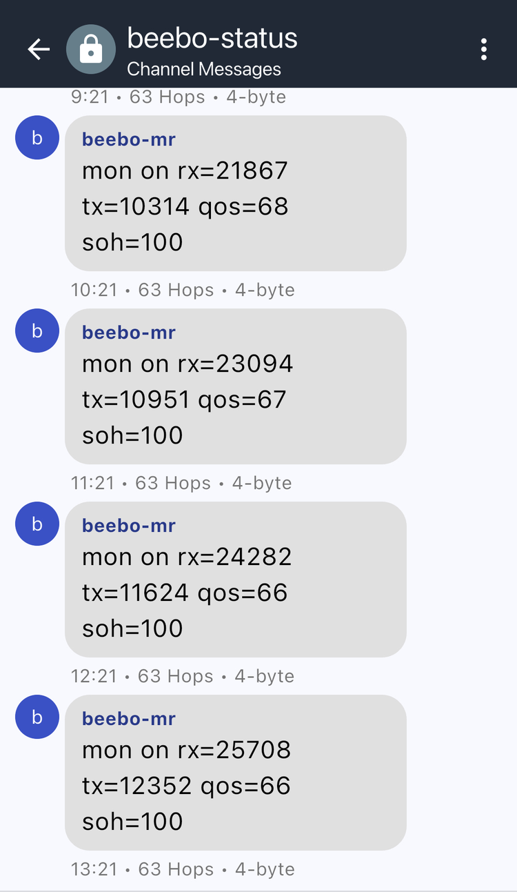

The Phone Feed¶
Beebo creates two private channels in the app's channel list:
| Channel | What it is |
|---|---|
beebo-status |
Lines the node posts about itself. Anything you type here is ignored. |
beebo-cli |
Type a command and the node's reply appears in the channel. |
They are ordinary channels with a random secret, listed like any other. Nothing in them is ever sent over the air, and a message received over the air on these channels is dropped. You can rename them. A feed that you delete is recreated at the next boot with a new secret.
Both roles have them. A repeater has no contacts and refuses messages to normal channels, but the feed works as in a companion.
Status lines¶
Every line starts with the node's name.
| Line | When |
|---|---|
boot <version> <role> <reset reason> |
The node has started. |
mon <on or off> rx=<n> tx=<n> qos=<pct or -> soh=<pct> |
A minute after boot, then hourly: packets received and sent, the share of sends confirmed by an ACK or a heard repeat (- until there is data) and the node's health score. |
warn: txpower=<n> dBm underdrives the PA, run: settings radio.txpower 18 |
At boot and when a trial is enabled, if the transmit power is under 16 dBm. |
trial waiting for traffic |
A trial is on but the node hears too little traffic to start. |
trial <setting> start profile=<name> a=<a> b=<b> blocks=<n> block=<s>s |
A trial begins. |
trial <setting> blk <i>/<n> pairs=<p> gain=<%> [<low>,<high>] |
A block closed. The interval appears once the trial has one. |
trial <setting> <result> a=<a> b=<b> pairs=<p> gain=<%> se=<%> |
A trial ended. See Setting Trials. |
trial <setting> <outcome> |
A switch declined to run: skipped_same, skipped_no_control or skipped_underpowered. See Setting Trials. |

Commands¶
The beebo-cli channel runs the command on the live role. A reply over 160 characters
is split into up to four numbered parts. A command with no output answers (no output).
The same commands work in the app's own CLI screen, which shows the first 160 characters
of a reply. They use the words of the beebo command line:
| Command | What it does |
|---|---|
settings <path> |
Reads a setting, with the path beebo settings uses |
settings <path> <value> |
Sets it |
settings and settings <branch> |
List the names below the top level or a branch (settings routing.tuning.trial) |
status, status node, status radio, status resources |
Name, role, version, uptime, supply, faults; noise floor, RSSI, SNR and airtime; memory, contacts, messages and ring fill |
check |
The QoS and SoH verdicts of beebo check |
monitor |
Capture state and ring fill |
monitor status, monitor status health, ... service, ... rates |
The counters that are not zero (health faults, traffic and delivery) and the time shares of the node |
monitor start, monitor stop, monitor clear |
Resume or pause the capture, or empty the ring |
monitor capture and monitor capture <leaf> on\|off |
Show or set what is captured: enabled, rx, tx, radio, env, batt, tuning, event, path |
monitor tuning trial, ... start [switch...\|all], ... stop |
The trial state, start it with the named switches, stop it (repeater role) |
battery state |
Whether a battery is present, the voltage and the charge state; battery state <state> forces the state for testing |
battery calibrate <volts> |
Sets board.adc.multiplier from a voltmeter reading at the battery; 4.2 V is a fully charged battery. The host takes the same argument |
advert flood, advert direct |
Send a flood or a direct advert |
neighbors peek, neighbors forget <hex>, neighbors discover [-t type] |
The live neighbor table, prune an entry, ask nearby nodes who they are (repeater role) |
region tree, region allow <name>, region deny <name>, region put, region remove, region save, region def |
The flood regions (repeater role) |
clock, reboot, ver |
The node's time, restart it, firmware version and build date |
settings reaches the trial, routing, radio, FEM, battery, node and board settings that
have a plain value. Commands lists what runs on the node and what stays on the computer. A repeater-only path answers
ERR: needs role 'repeater', node is 'companion' on a companion. The rest of the tree,
the downloads, the plots and the analysis are in beebo, on a computer. The older text
commands (get, set) keep working: see the key list.
Limits¶
- The feed queue lives in RAM, so a reboot loses lines that the app had not synced. The boot line is posted again.
- When the queue is full, feed lines take priority over other messages.